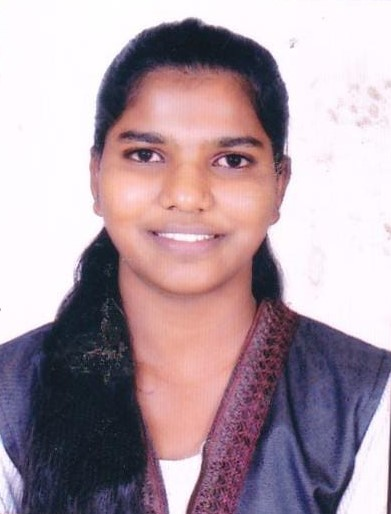

Shraddha Bute
Computer Engineer
📞 9175140251 |
📧 shraddhacb2747@gmail.com
About Me
Computer Engineering student with a strong foundation in software development,
web technologies, and cloud computing. Experienced in developing responsive
web applications using modern tools. Interested in Data Science, Full Stack
Development, and building efficient software systems.
Technical Skills
- C Programming
- C++
- Python
- Java (Basic)
- HTML
- CSS
- MySQL
- Firebase
- Git
- VS Code
- Jupyter Notebook
Soft Skills
- Problem Solving
- Team Collaboration
- Communication
- Time Management
- Adaptability
- Continuous Learning
Education
-
Bachelor of Engineering in Computer Engineering
K.V.N. Naik College, Nashik
2022 – 2026
-
Higher Secondary Certificate (HSC)
KTHM College, Nashik
2022
-
Secondary School Certificate (SSC)
St. Mary’s High School, Dahanu, Palghar
2020
Work Experience
Web Development Intern
Disha Institute, Nashik
Feb 2025 – April 2025
- Developed responsive E-commerce website using HTML, CSS, and JavaScript
- Created product catalogue, search, cart and checkout modules
- Improved performance and user experience across devices
Projects
EV Charging Management System
K.V.N. Naik College
- Developing EV charging station slot booking system
- Implementing real-time station search
- Improving scalability and performance
Certifications
- Python Fundamentals – Great Learning
- C Programming Language Certificate
- Ethics in Engineering Practice – NPTEL
Hobbies
- Graphics Design
- Video Editing
- Learning New Technologies
Contact
Phone: 9175140251
Email: shraddhacb2747@gmail.com